当社は、将来にわたり安定して電気をお届けするために電源のベストミックスを目指しています。なかでも、供給安定性および経済性に優れ、地球環境にも優しい原子力を、電源多様化の中核に位置付けており、石川県羽咋郡志賀町において志賀原子力発電所1号機および2号機の運転・保守管理業務などを行っています。
原子力発電所は、幅広い技術の集積から成り立っており、原子力を専攻した人に限らず、電気・電子、機械、化学など様々な分野の専門性を持った社員が発電所の運転・保守などに活躍しています。
また、電力各社と協力して、安全性・信頼性の向上に向けた研究、原子燃料サイクルや放射性廃棄物処理処分の確立に向けた研究、海外の原子力事業者との交流なども行っています。
2011年3月に発生した「東日本大震災」により、東京電力株式会社福島第一原子力発電所において重大な事故が発生したことは、大変深刻な事態と受け止めています。この事故を踏まえ、「安全性向上施策」を着実に実施していくことで、今後も志賀原子力発電所の安全性をより一層高める対策に継続的に取り組んでいきます。
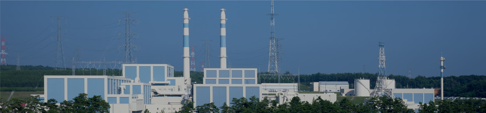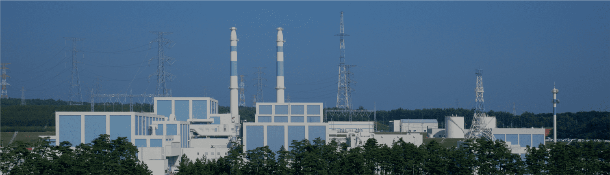

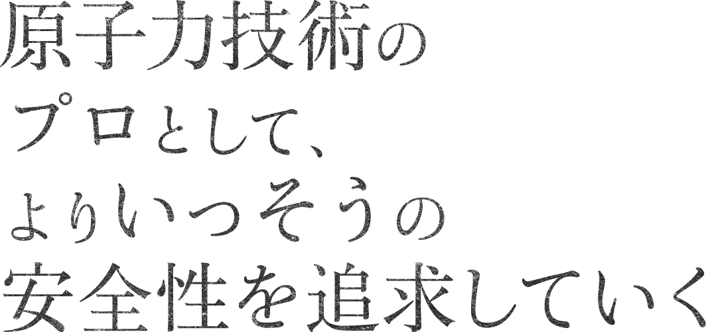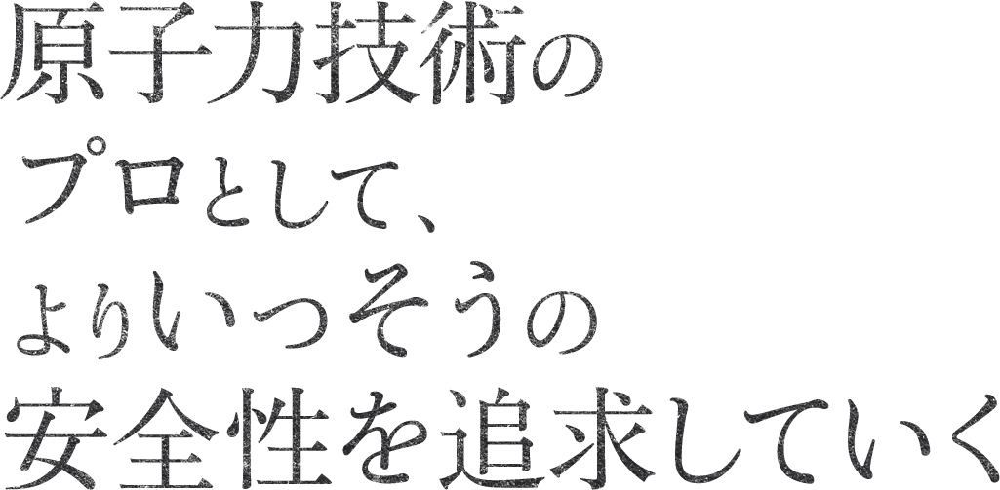
原子力部 原子力耐震技術チーム辰尾 光一
入社 / 2001年
航空宇宙工学専攻修了
2014年4月 志賀原子力発電所 機械保修課 副課長
2018年7月 原子力部 原子力耐震技術チーム 副課長
2019年7月 原子力部 原子力耐震技術チーム／カイゼン担当 副課長
2020年10月 原子力部 原子力耐震技術チーム／カイゼン担当 課長代理
経歴は取材時点のものです
 歩んできたキャリアは？
歩んできたキャリアは？
大学時代は別の地で過ごしていましたが、将来は故郷である北陸で暮らしたいとの思いを持っていました。研究室では原子力技術との関連もある航空宇宙工学を専攻しており、最先端技術を結晶し、電力を生み出す原子力分野を志望、北陸電力へ入社を決めました。志賀原子力発電所で発電所機械設備の保守監理、原子力部では社外委員会への出席や発電所トラブル時の対外対応を行うなど、現場と本部のそれぞれで多様な仕事を経験。また、北陸電力の業務効率化へ原子力部内業務や職場環境に対するカイゼン活動も同時に推進してきました。
 現在の仕事、
現在の仕事、
プロとして意識していることは？
志賀原子力発電所は、開発実証された最新技術を活用しているとともに、自然環境や地域環境との調和を目指すものとして土木建築面でも評価されている発電所。東日本大震災以降、当発電所は運転停止しており、現在は再稼働のために耐震設計を検討・強化し、さらなる安全をつくっていく取り組みが進行中です。その中で私は機械・電気設備の耐震設計業務を担っています。具体的には発電所敷地内で想定しうる最大の地震力に対して、ポンプや配管等の機械・電気設備の安全動作を担保する設計に取り組んでいます。材料力学や破壊工学、震動工学など高度な専門知識を駆使する日々の中で、私が常に意識しているのは原子力技術のプロフェッショナルとして誰よりも強く安全への意識を持つこと。再稼働へは非常に長く険しい道程ですが、長年にわたり原子力発電に携わってきた技術者としてこの領域に携われること、再稼働へ同じ思いを共有するプラントメーカーや他電力会社の技術者とともに一致団結し、解決策を生み出していくことに仕事の醍醐味を感じています。
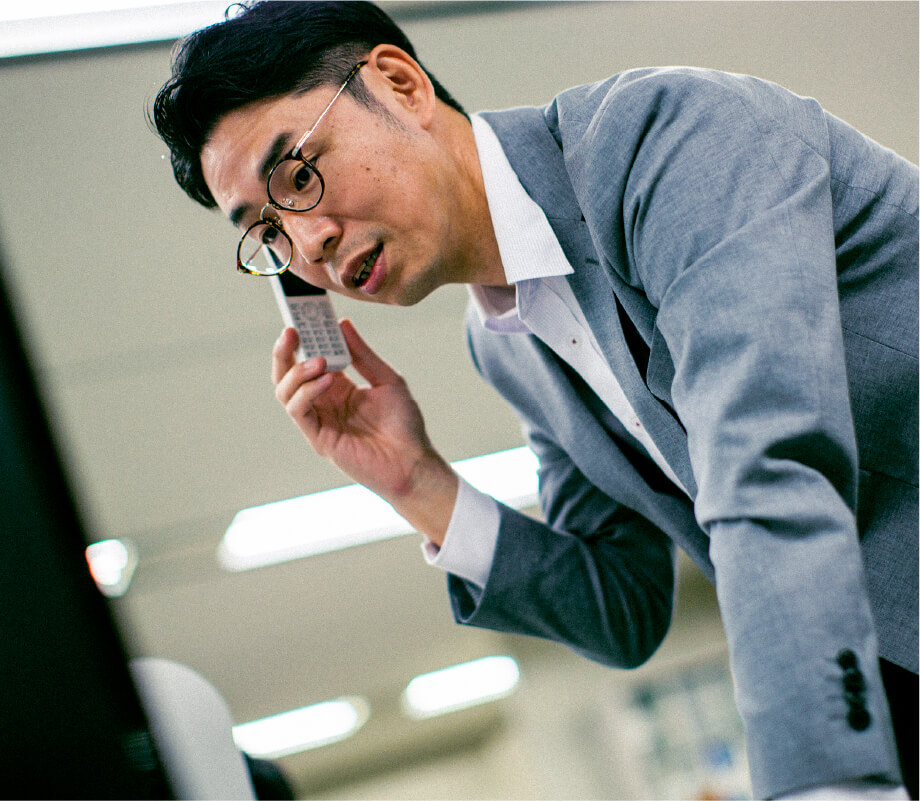
 これから挑みたいことは？
これから挑みたいことは？
原子力利用にはさまざまな検討がなされていますが、安定供給と環境性を実現するエネルギーミックスを考えるうえで原子力発電は必要だと考えています。当社は原子力事業者としては他電力会社と比較すると小規模で後発ですが、その分一人ひとりの技術者に求められる知識の広さ、深さがあり、技術者として成長できる環境だと言えます。近年では原子力発電所の通常運転を経験していない技術者も増えていますが、運転時を知る技術者の一人として、受け継ぎ培ってきた技術、安全への姿勢を継承していきたいと思います。そして、若手技術者とともに再稼働とその後の安全・安定運転継続に向けて取り組んでいきたいと考えています。
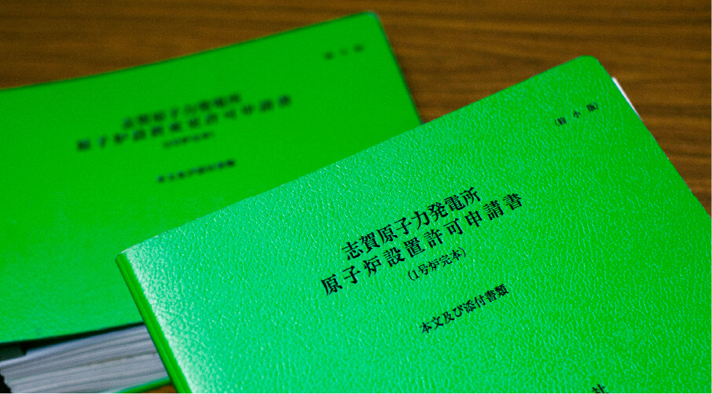
 学生へメッセージを
学生へメッセージを
これまでの電力業界は安定的なイメージだったと思いますが、電力システム改革や原子力発電所の再稼働対応など、現在は大きなうねりの中にあると言えます。そこで求められるのは将来の安定を会社に求める守りの姿勢ではなく、会社を自ら変えていくという攻めの姿勢です。挑戦し、自己実現していく場所に北陸電力を選んでもらえるのであれば、これ以上の幸せはありません。

社外委員会との会議出席
電気事業連合会をはじめとした社外委員会に出席。他電力会社やメーカーが参加する中、北陸電力を代表して発言することで確かな存在感を示し、信頼を得られるよう取り組んでいます。当会議は社外とのネットワークが広がる貴重な機会でもあります。
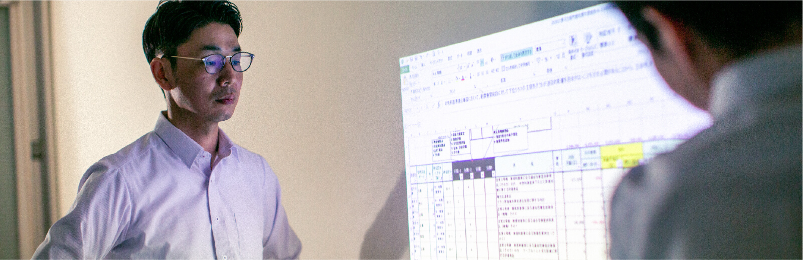
部下からの業務報告
少数精鋭で業務に取り組む北陸電力において、後輩社員の育成は私の大きな役割の一つ。業務資料に対する的確なフィードバックを行い、成長をサポートできるよう取り組んでいます。
技術図書閲覧
進行中の案件について、技術図書を確認し、対応策を考えていきます。機械・電気設備の耐震設計業務に関する非常に専門性が高い内容ですが、常に知識をアップデートすることを心がけています。
カイゼン活動に関する打ち合わせ
原子力部全体の生産性向上、働きやすさを感じられる職場づくりを目指し、カイゼン活動にも取り組んでいます。人こそが未来への動力、さらなる発展への足がかりとするべく検討を重ねていきます。
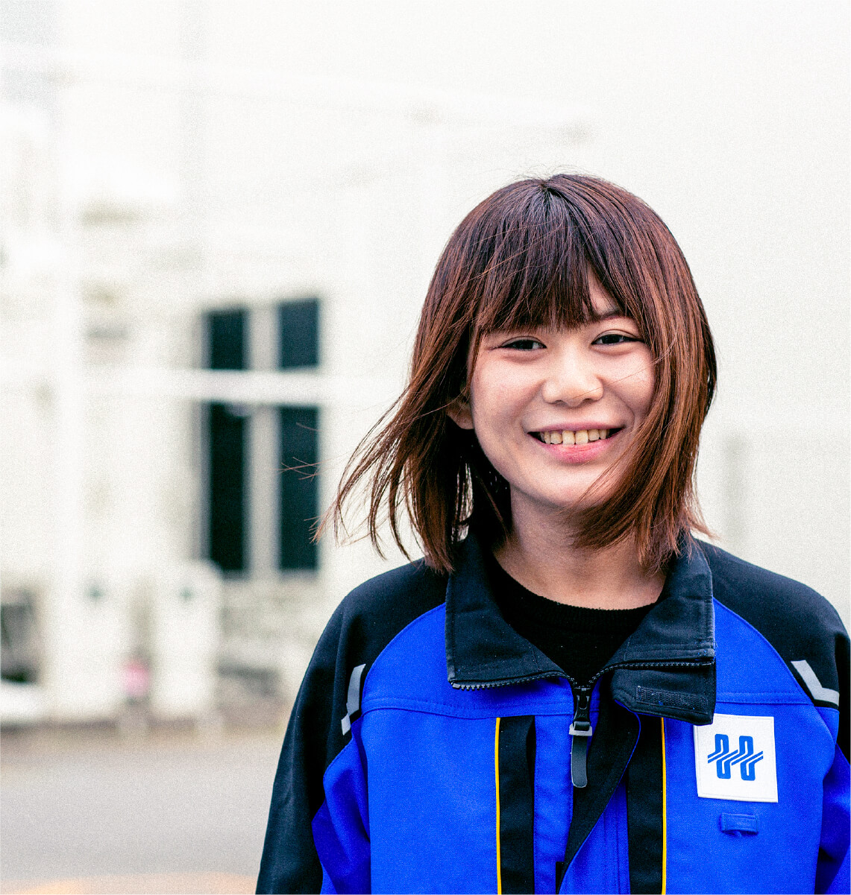
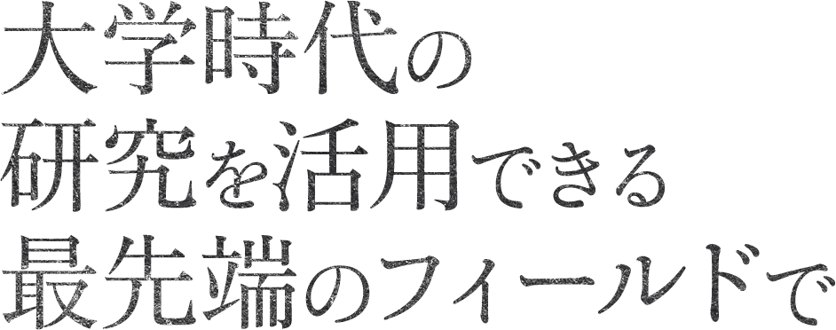
志賀原子力発電所 発電部 放射線安全課清水 真結
入社 / 2017年
理工学域 物質化学類卒業
現在に至るまでの経歴
2017年6月 志賀原子力発電所 発電部 発電課
2019年7月 志賀原子力発電所 保修部 電気保修課
2020年7月 志賀原子力発電所 発電部 放射線安全課
経歴は取材時点のものです
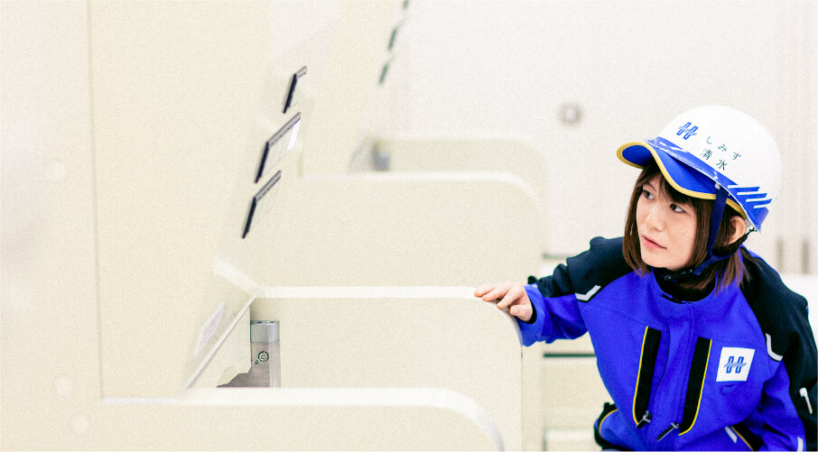
 入社動機は？
入社動機は？
大学では放射性物質の性質や化学反応を扱う放射化学を研究。学んだ放射線測定技術などを活用できる職に就くことを考えていました。地元である北陸で働きたいとの思いも強く、その双方を実現できるのが北陸電力管内において原子力発電所の技術者として働く道。発電所見学や先輩社員との対話を行う中で働くイメージを強く持つことができ、入社を決めました。
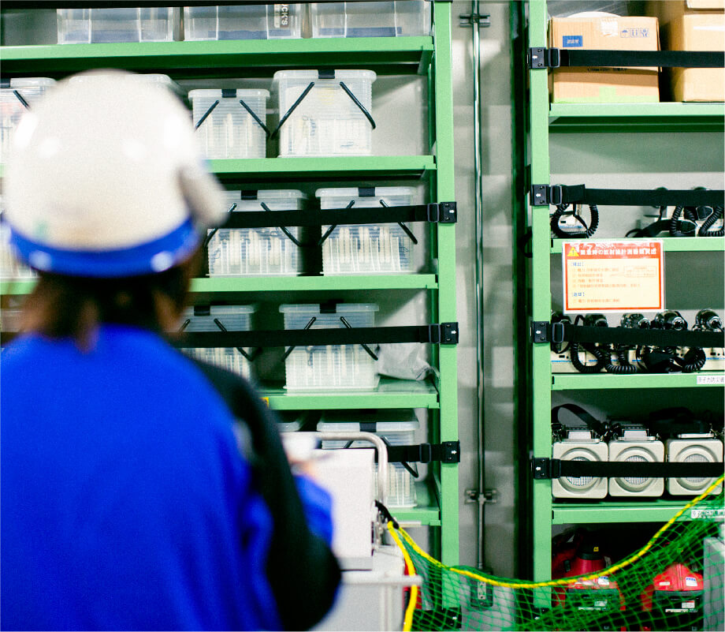
 現在の仕事、その魅力は？
現在の仕事、その魅力は？
物理学・化学・電気工学・機械工学などさまざまな専門分野を融合する原子力は技術の集大成とも言える発電方法です。志賀原子力発電所には当社社員のみならず、多くの協力会社の方々が働いており、日々、設備点検や工事を行っています。その中で私は放射線管理区域内で作業する方々が安心して作業を行えるように、法令で定められている線量限度などの放射線量監視・管理を実施しています。加えて、放射線作業で使用する専門作業服などのランドリー業務も大切な仕事の一つです。作業支援を行うことで再稼働に向けた歩みを着実なものにしていく、そのような責任とやりがいある仕事に魅力を感じています。線量算出などの技術的知見、社内規定や法令理解など専門知識を求められる仕事ですが、大学時代の研究と連続する部分もあり、自らの学びを当社業務に活用できるのはうれしいです。
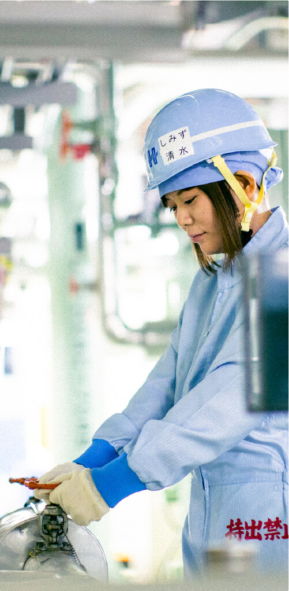
 これからの目標は？
これからの目標は？
現在は指示内容をマニュアル通りに遂行していくのが精一杯な部分もあり、手順の背景にある考え方やリスク想定などの観点をまだまだ満足に持てていないため、実務経験を積み重ね、原子力技術者として成長していきたいと思っています。そのような成長途上の私ですが、現在、発電所内の若手メンバーを中心に原子力部門の将来を見据えた「志賀原長期ビジョン」を掲げ、新技術導入の検討にも取り組んでいます。多様な観点から原子力発電への考えを深めるとともに、安全性向上のために新技術や知見を取り入れ、北陸地域の未来に貢献していければと考えています。
 学生へメッセージを
学生へメッセージを
私は入社当初、関連分野の知識がなく不安を抱いていましたが、上司や先輩、同期に何度も助けられ、こうして現在まで進んでこれました。誰もがスタートはゼロからです。私たちとともに学び、切磋琢磨していきましょう。当社でなら自分の専門や特性を活かした仕事を見つけることができると思います。

- 8:40
-
出社、始業ミーティング
朝礼から1日の業務が始まります。安全に作業を行うために各種唱和や連絡事項周知を実施。業務進捗や今後の進行について確認し、情報共有を徹底します。
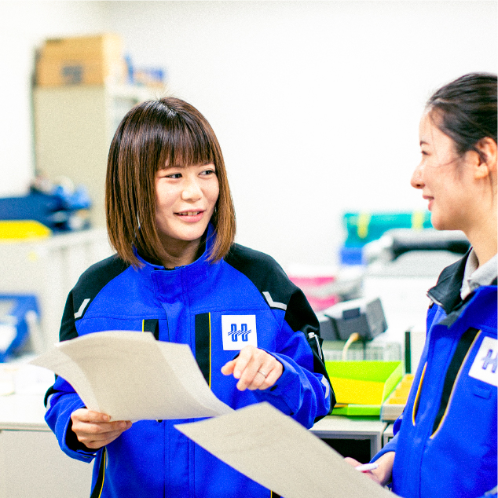 - 9:30
-
登録室業務
放射線管理区域内で働く方々の線量や指定登録状況を管理しているのが従事者登録室です。ここで委託先とコミュニケーションを取り、登録状況を確認・管理していきます。
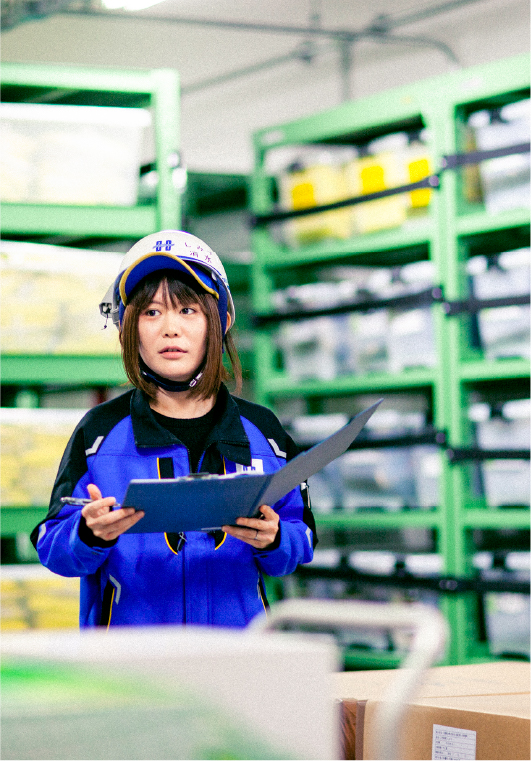 - 11:00
-
ランドリー設備の現場操作
設備点検時にはランドリー設備等に支障が出ないよう、事前に電源を落とし、他機器との隔離操作が必要です。点検終了後に試運転に立ち会い、機器が問題なく稼働するか確認を行います。
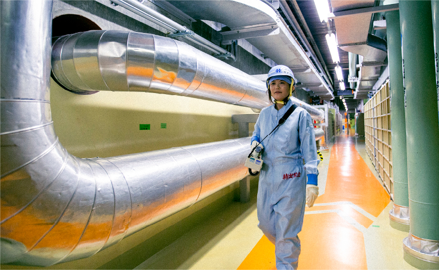 - 14:00
-
管理区域パトロール
管理区域内で働く作業者の被ばく低減等を目的とした防護状況等の現場パトロールも私の役割です。放射線作業時のルール順守状況確認をはじめ、声掛け等、安全意識向上や現場改善を行っています。
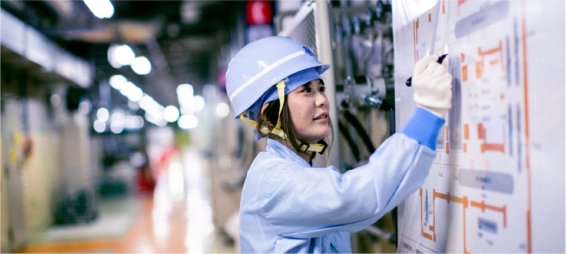 - 17:10
-
書類作成、退社
委託先から提出された記録を確認し、報告用の書類を作成します。グループ内で当日の業務内容、特記事項を共有し、不備のないことを確認。必要に応じて時間外業務を行いますが、この日はミーティング後に退社しました。
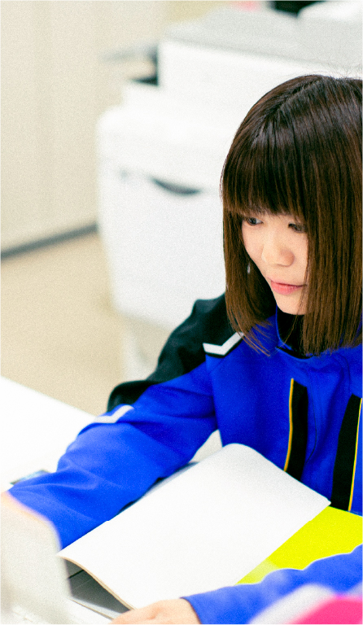